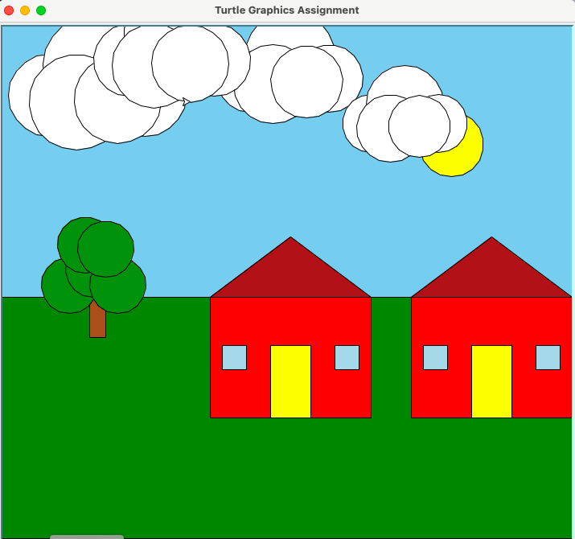

About the Project
This project is about creating a graphical scene using Python’s Turtle graphics module.I used the provided building block functions (draw_rectangle, draw_square, draw_triangle, draw_circle, draw_polygon, draw_curve, etc.) to create functions that draw composite shapes such as a house, flowers, trees, etc. (Please write more about how you refactored the code)
Sample Code
This function creates a cloud shape using multiple overlapping circles. The parameters allow for flexible positioning and scaling:
• t: The turtle graphics object for drawing
• x, y: Starting position coordinates for the cloud
• size: Scale factor (default 1.0) to make clouds larger or smaller
def draw_cloud(t, x, y, scale=1.0):
"""Draw a cloud using overlapping circles."""
offsets_sizes = [
(0, 0, 30),
(35, 10, 40),
(70, 0, 30),
(20, -10, 35),
(50, -5, 32)
]
for dx, dy, size in offsets_sizes:
jump_to(t, x + dx * scale, y + dy * scale)
draw_circle(t, size * scale, "white")
Final Scene
Here's the completed turtle graphics scene featuring two houses a green grass landscape with a tree ,a blue sky, clouds, and a sun.

The image depicts a vibrant, simplified landscape featuring a bright blue sky with white, circular clouds and a yellow sun. On the green ground, two identical red houses with yellow doors and blue windows stand beside a green-leafed tree with a brown trunk, all rendered with clear outlines.